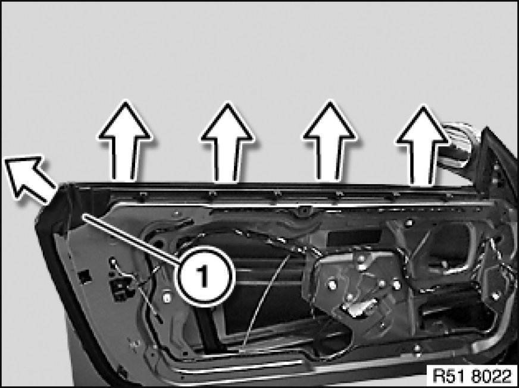
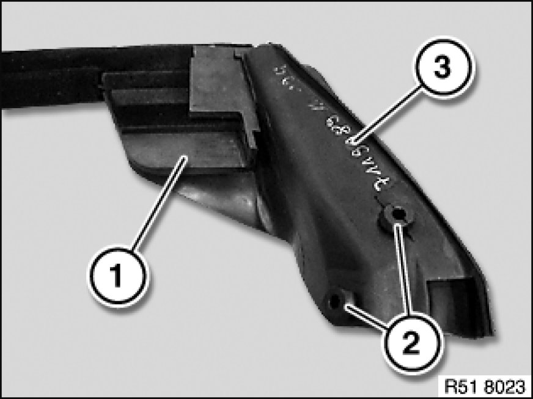
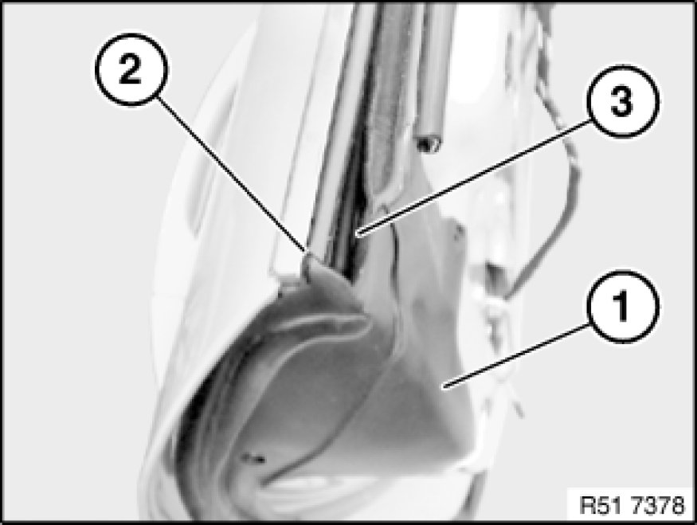

51 21 330 Removing and Installing/Replacing Window Cavity Cover Strip on Inner Front Door
51 21 330 - Removing and installing/replacing window cavity cover strip on inner front door

Important!
The "Instructions on fitting window guides" serve as the basis for this repair instruction and must be observed without fail.

Necessary preliminary tasks:
- Remove outer window cavity cover strip 51 21 300 Removing and Installing/Replacing Window Cavity Cover Strip on Outside of Left or Right Front Door
- Remove front door trim Removing and Installing (Replacing) Front Left or Right Door Trim Panel

Pop window cavity cover strip (1) in direction of arrow out of front door.

Installation Note:
Moulded section (1) and retaining elements (2) of window cavity cover strip (3) must not be damaged.
Moulded section (1) must be correctly fed into door.
Moisten window cavity cover strip (3) prior to fitting with approved anti-friction agent.

Installation Note:
Make sure window cavity cover strip (1) is installed in correct position on door (2) and door window glass (3).